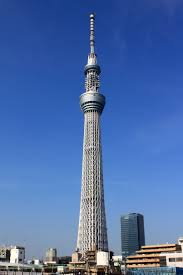
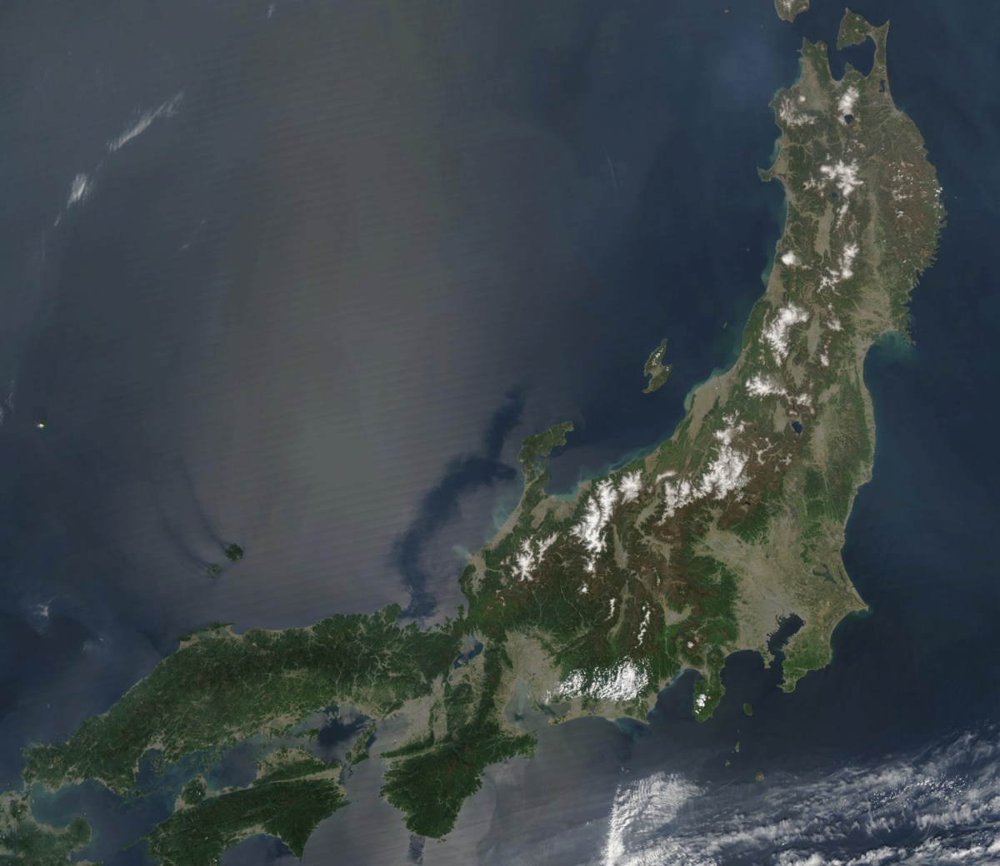

Naj... rzeczy w Japonii
Najwyższy budynek w Japonii

Obecnie najwyższym budynkiem w Japonii jest Tokyo sky tree.
Najwieksze miasto w Japonii

Tokyo zajmuje obecnie pozycję największego miasta.
Nastarszy człowiek w Japonii
Najstarszym człowiekiem żyjącym w Japonii była Nabi Tajima. Żyła 117 lat i 260 dni.
Najwieksza wyspa w Japonii

Największa wyspa Japonii to Tokyo